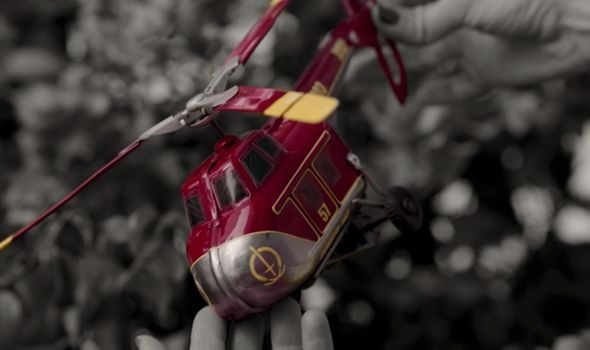
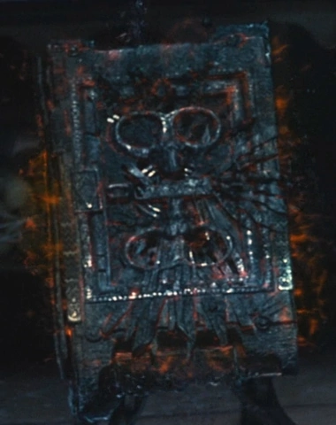

Tyler's Vision of Wandavision
After the fallout of Avengers: Endgame, one of the questions on the minds of the MCU fanatics was, to quote the band Imagine Dragons, “Where do we go from here?” Coming off one of the largest movies ever made, they had established their monopoly on the superhero genre, and they were never going to lose it. Needless to say, everyone had high hopes for phase 4 of Marvel.
Being the first show that is a part of the official canon MCU story. I was pretty excited to see how Kevin Feige would handle the new medium of entertainment. Wandavision has a very good intriguing start, a 1950's style sitcom starring apparent newlyweds Wanda Maximoff and the previously dead Vision. The first episode is decent story-wise, although something seems off, Vision works at a place but has no idea what he does, Wanda and Vision can't remember how they met or when they were married, and at the end Vision's boss, a chubby version of Tim Curry, chokes on a piece of sausage while his wife is telling him to "stop it". Not to mention how at the end of the first episode it zooms out to reveal a 1950s TV surrounded by a lot of blinking lights in what could only be presumed to be some sort of lab.
Things only get weirder as the series goes on. At the start of episode 2, a red helicopter lands in their bushes, everything is black and white except for the helicopter. During a neighborhood party planning event, a voice comes on the radio asking Wanda if she is okay. It only gets weirder from there, Wanda gets pregnant and gives birth all in the same episode, her neighbor asks her questions about her brother and Ultron then gets blasted through her wall, her kids can control their age, Peter Evans(the actor who played Quicksilver in the X-Men series) shows up as Petro Maximoff, spawning a whole slew of "X-Men MCU Crossover" theories to pop up. All of the neighbors act super sus, like going to Medbay and then showing up at Electrical kinda sus. The people at the end of the town are essentially NPC's just repeating the same movements over and over again. So something wacky is definielty happening.
After episode 3 we start to get some answers, there is an organization called SWORD(Sentient Weapon Observation Response Division) that is responsible for overseeing space-based expeditions and making, shocking as it may be, AI's. After Infinity War they got control of Vision's body and worked to reverse-engineer it, now is when it starts to get more Marvel-like. Wanda, in her grief of losing Vision, stole him from SWORD and subconsciously took control of an entire town creating something called “The Hex” where she lives her fantasy life with Vision in a suburb. This is where the show really teters off.
When Wanda confronts the FBI outside of The Hex she says that she isn't doing anything wrong because she "isn't the one with the guns" to which FBI guy replies, "You took a whole town hostage". FBI guy is totally right. What does the USA do when their own citizens have been taken hostage? They raid the place guns blazing, except not now because the person holding the hostages has any power the script determines her to have at that moment. Wanda goes back into her fantasy world with Vision and her fake kids and expands The Hex to include the SWORD/FBI camp. Leaving just Monica Rambeau, a character no one remembers from the worst Marvel movie ever Captain Marvel, and Jimmy Woo, magic enthusasist from Ant-Man and The Wasp, to bring down Wanda. Because if two entire government agencies can't stop her, two minor character's that everyone forgot about can definielty do it.
Turns out, much of the show was orchestrated by a witch called Agatha Harkness, she tells Wanda that she has the power of an evil maggufin book, and that in the book it says that Wanda is going to destroy the whole world. She has been manipulating Wanda the whole time, including creatinng a fake Pietro, it turns out his real name is Ralph Bohner. That's right, possibly the biggest f-you to the entire fan base who thought the involvement of Evans was teasing a MCU X-Men Crossover, but nope it was a penis joke. Agnes brings down The Hex, temporarily, allowing Rambeau and Woo to get in, there's a big CGI fight between Wanda and Agnes, between Fake Vision and White Vision because apparently SWORD remade vision. How? Don't know, and don't think about it, just consume product and then get excited for new product. The Visions stop fighting to discuss the philosophical question of Theseus' Ship? Why? Don't know. Wanda defeats Agnes, absorbs her powers, because that's a thing she can do now apparently, and takes the evil maggufin book. She then makes the super selfless decision of sacrificing her fake family so that everyone in Westview can live their lives. Which leads to the dumbest line in all of the MCU:

Tyler's Take
For a show that has such a good start, it falls off in the worst possible way. It was a whole different feel of Marvel product, but just like Newton's third law states, "For every good thing in Marvel, there will be an equally bad thing". It had everything going for it but still managed to suck on a grand scale, just like the Republican's in the 2022 midterm election. I rate the first 3 episodes probably about 4 little red helicopters, but the last 5 episodes collectively barely pass the half helicopter threshold. It's intersting to learn a little more about Wanda's backstory, but by the end I found myself confused by all the mood shifts that seem to be plauging Phase 4, you must have some sort of quip every few minutes. An important character died? There's some terrible quip about how bad they were at pilates, or something else stupid. Honestly, unless you really, really, really, like marvel this show provides almost nothing in terms of substance, including the constant denial that Wanda is a bad guy despite taking an entire fricking town hostage, except the introduction of the evil maggufin book. Don't watch it.